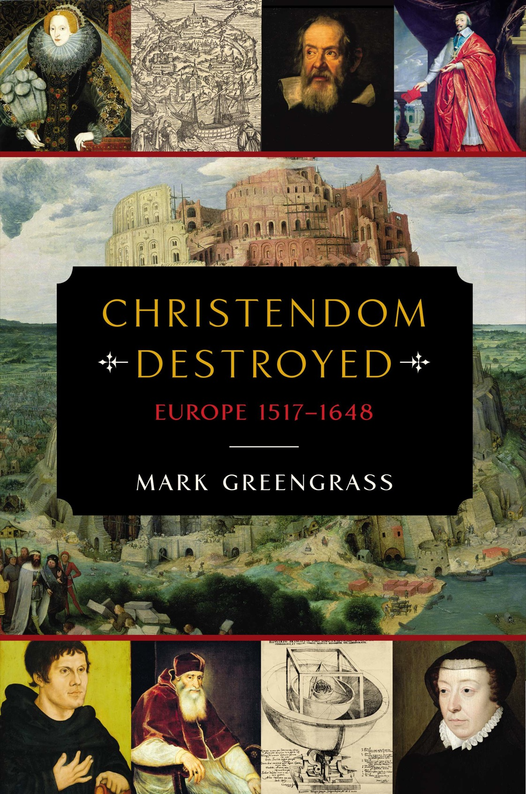

READING & IA — 企鹅欧洲史 · PENGUIN EUROPE

本页仅收录官方预览 / 授权试读与图书馆记录等可核验出处，不提供未经授权的全文镜像。全文以正式出版与馆藏借阅为准。This page links only verifiable sources — official previews, licensed samples, and library/OverDrive records. No unlicensed full-text mirrors. The complete original is obtained via the published edition or library loan.
✓
章旨 · Chapter argument：定题 —— 『基督教世界』(Christendom) 从『制度』重新定义为『共同想象』。全书方法论声明：1517 之前的欧洲不是政治统一，而是可被共同想象维系的信仰-文化共同体。之后每一节都在这条线上工作 —— 展示这个想象如何在神学、政治、艺术、印刷、朝圣五条边界上被同时拆散。Argument: 定题 —— 『基督教世界』(Christendom) 从『制度』重新定义为『共同想象』。全书方法论声明：1517 之前的欧洲不是政治统一，而是可被共同想象维系的信仰-文化共同体。之后每一节都在这条线上工作 —— 展示这个想象如何在神学、政治、艺术、印刷、朝圣五条边界上被同时拆散。
论证展开 · Argument development：1500 前夜的基督教世界地图 (拉丁西方 vs 东正教东欧-俄罗斯、奥斯曼巴尔干-安纳托利亚) → 教廷的世俗化 (Borgia、Renaissance papacy) → 人文主义 (Erasmus、More、Reuchlin、Clichtthovius) → 印刷术 (1450 谷登堡 → 1500 已印 2000 万册) → 城市与商业网络 (Fugger、Welser) → 朝圣与圣物经济 → 与拜占庭的对照 (1453 陷落的余波) → 提出本书的溶解论。Development: 1500 前夜的基督教世界地图 (拉丁西方 vs 东正教东欧-俄罗斯、奥斯曼巴尔干-安纳托利亚) → 教廷的世俗化 (Borgia、Renaissance papacy) → 人文主义 (Erasmus、More、Reuchlin、Clichtthovius) → 印刷术 (1450 谷登堡 → 1500 已印 2000 万册) → 城市与商业网络 (Fugger、Welser) → 朝圣与圣物经济 → 与拜占庭的对照 (1453 陷落的余波) → 提出本书的溶解论。
关键人物 · 事件 · 年代 · 地名：Alexander VI、Julius II、Leo X、Erasmus、Thomas More、Reuchlin、Trithemius、Sforza、Medici、Fugger、Gutenberg、Aldus Manutius、SavonarolaKey figures · events · dates · places: Alexander VI、Julius II、Leo X、Erasmus、Thomas More、Reuchlin、Trithemius、Sforza、Medici、Fugger、Gutenberg、Aldus Manutius、Savonarola
材料与方法 · Evidence base：Erasmus《Praise of Folly》(1511)、《Epistolae Obscurorum Virorum》(1515)、Solinus《De Situ Orbis》、1500 年禧年记录、Aldine 版本、Fugger 家族账簿、Sforza-Medici 通信Evidence: Erasmus《Praise of Folly》(1511)、《Epistolae Obscurorum Virorum》(1515)、Solinus《De Situ Orbis》、1500 年禧年记录、Aldine 版本、Fugger 家族账簿、Sforza-Medici 通信
章际关系 · Relation to neighbouring chapters：为全书定题 —— 之后每一节都在证明这个『共同想象』如何被拆散。Chapter link: 为全书定题 —— 之后每一节都在证明这个『共同想象』如何被拆散。
✓
src EPUB TOC extracted from original book
章旨 · Chapter argument：路德与宗教改革的爆发 —— 95 条 (1517.10.31) 到奥格斯堡和约 (1555)。Greengrass 处理这一段时强调：路德之所以能被保护，不是因为神学，而是因为萨克森选帝侯 Frederick the Wise 与帝国政治的缝隙。一个皇帝的失败作为整个天主教世界解体的第一块多米诺。Argument: 路德与宗教改革的爆发 —— 95 条 (1517.10.31) 到奥格斯堡和约 (1555)。Greengrass 处理这一段时强调：路德之所以能被保护，不是因为神学，而是因为萨克森选帝侯 Frederick the Wise 与帝国政治的缝隙。一个皇帝的失败作为整个天主教世界解体的第一块多米诺。
论证展开 · Argument development：路德维滕贝格 95 条 → 莱比锡辩论 (1519) → 教皇训令 (1520) 焚毁 → Worms 议会 (1521) 与 Wartburg 隐居 → 茨维考先知与农民战争 (1524-1525，闵采尔) → 施马卡登联盟 (1531) → 奥格斯堡 Confessio (1530) → 查理五世的奥格斯堡和约 (1555) 与 cuius regio eius religio。Development: 路德维滕贝格 95 条 → 莱比锡辩论 (1519) → 教皇训令 (1520) 焚毁 → Worms 议会 (1521) 与 Wartburg 隐居 → 茨维考先知与农民战争 (1524-1525，闵采尔) → 施马卡登联盟 (1531) → 奥格斯堡 Confessio (1530) → 查理五世的奥格斯堡和约 (1555) 与 cuius regio eius religio。
关键人物 · 事件 · 年代 · 地名：Martin Luther、Frederick the Wise、Charles V、Carlstadt、Kampfbound、Zwingli、Melanchthon、Landgrave Philip of Hesse、Thomas Müntzer、Duke George of Saxony、Eck、Tetzel、Leo X、Adrian VI、Clement VIIKey figures · events · dates · places: Martin Luther、Frederick the Wise、Charles V、Carlstadt、Kampfbound、Zwingli、Melanchthon、Landgrave Philip of Hesse、Thomas Müntzer、Duke George of Saxony、Eck、Tetzel、Leo X、Adrian VI、Clement VII
材料与方法 · Evidence base：路德《95 条》《教会被掳于巴比伦》《论善功》《大/小教理问答》《桌边谈》、Melanchthon《Loci Communes》《奥格斯堡 Confessio》、Zwingli 苏黎世辩论记录、农民战争十二条款、Müntzer 书信、Worms 议会记录、Catechism 诸版Evidence: 路德《95 条》《教会被掳于巴比伦》《论善功》《大/小教理问答》《桌边谈》、Melanchthon《Loci Communes》《奥格斯堡 Confessio》、Zwingli 苏黎世辩论记录、农民战争十二条款、Müntzer 书信、Worms 议会记录、Catechism 诸版
章际关系 · Relation to neighbouring chapters：为第二节 (加尔文与多元改革) 铺路 —— 路德只是多元改革的第一种可能。Chapter link: 为第二节 (加尔文与多元改革) 铺路 —— 路德只是多元改革的第一种可能。
✓
src EPUB TOC extracted from original book
章旨 · Chapter argument：加尔文与多元改革 —— 改革不是一次事件而是多国多派的并行过程。日内瓦 (1536-1564)、苏格兰 (Knox 1560)、英格兰 (Edward VI → Mary → Elizabeth 1559)、法国胡格诺 (1559 全国大会)、荷兰 (1566 破坏圣像)、瑞典 (1527 Västerås)、丹麦 (1536 哥本哈根) 同时发生。Argument: 加尔文与多元改革 —— 改革不是一次事件而是多国多派的并行过程。日内瓦 (1536-1564)、苏格兰 (Knox 1560)、英格兰 (Edward VI → Mary → Elizabeth 1559)、法国胡格诺 (1559 全国大会)、荷兰 (1566 破坏圣像)、瑞典 (1527 Västerås)、丹麦 (1536 哥本哈根) 同时发生。
论证展开 · Argument development：加尔文《基督教要义》(1536 → 1559 拉丁定本) 与日内瓦秩序 → Knox 与苏格兰 (1560 苏格兰 Confession of Faith) → Cranmer 与英格兰三《共同祈祷书》(1549、1552、1559) + 三十九条 (1563) → 法国 Huguenot 信仰告白 (1559) + 圣巴托罗缪 (1572) → 荷兰破坏圣像 (1566) 与八十年战争 (1568-1648) → 北欧的路德国家化。Development: 加尔文《基督教要义》(1536 → 1559 拉丁定本) 与日内瓦秩序 → Knox 与苏格兰 (1560 苏格兰 Confession of Faith) → Cranmer 与英格兰三《共同祈祷书》(1549、1552、1559) + 三十九条 (1563) → 法国 Huguenot 信仰告白 (1559) + 圣巴托罗缪 (1572) → 荷兰破坏圣像 (1566) 与八十年战争 (1568-1648) → 北欧的路德国家化。
关键人物 · 事件 · 年代 · 地名：John Calvin、William Farel、Theodore Beza、John Knox、Thomas Cranmer、Hugh Latimer、Nicholas Ridley、Elizabeth I、Mary Tudor、Gaspard de Coligny、Catherine de Medici、William of Orange、Gustav Vasa、Christian IIIKey figures · events · dates · places: John Calvin、William Farel、Theodore Beza、John Knox、Thomas Cranmer、Hugh Latimer、Nicholas Ridley、Elizabeth I、Mary Tudor、Gaspard de Coligny、Catherine de Medici、William of Orange、Gustav Vasa、Christian III
材料与方法 · Evidence base：加尔文《Institutes》与日内瓦讲道、Knox《History of the Reformation in Scotland》、《共同祈祷书》各版、Foxe《殉道史》、法国 Huguenot 信仰告白、荷兰《Apologie》(1580)、宗教会议记录Evidence: 加尔文《Institutes》与日内瓦讲道、Knox《History of the Reformation in Scotland》、《共同祈祷书》各版、Foxe《殉道史》、法国 Huguenot 信仰告白、荷兰《Apologie》(1580)、宗教会议记录
章际关系 · Relation to neighbouring chapters：把路德-加尔文-英国-北欧-东欧的多元改革并置 —— 拆掉任何单线宗教改革叙事。Chapter link: 把路德-加尔文-英国-北欧-东欧的多元改革并置 —— 拆掉任何单线宗教改革叙事。
✓
src EPUB TOC extracted from original book
章旨 · Chapter argument：天主教的自我改革 —— Greengrass 拒绝 Counter-Reformation 术语，用 Catholic Reformation 呈现内在更新。依纳爵、阿维拉的德兰、十字若望、斐理伯·内里作为与新教改革者对等的正面塑造者。这一立场是英语学界 1990s 以来 (O'Malley、Prosperi) 的共识。Argument: 天主教的自我改革 —— Greengrass 拒绝 Counter-Reformation 术语，用 Catholic Reformation 呈现内在更新。依纳爵、阿维拉的德兰、十字若望、斐理伯·内里作为与新教改革者对等的正面塑造者。这一立场是英语学界 1990s 以来 (O'Malley、Prosperi) 的共识。
论证展开 · Argument development：天主教会内的早期改革 (Cajetan、Carafa/G Paul IV、Contarini) → 依纳爵《神操》(1548) 与耶稣会 (1540 立会、1547 Laynez、1556 依纳爵去世) → 特伦托公会议 (1545-1563) 的三段展开与教义定本 → 阿维拉的德兰 (1515-1582) 与加尔默罗改革 → 十字若望 (1542-1591) 的神秘神学 → 斐理伯·内里 (1515-1595) 与 Oratory → Borromeo 与米兰教省改革 → 罗马教理 (1566) 与《罗马课经》(1568/1570) → 耶稣会全球宣教 (沙勿略、范礼安、利玛窦)。Development: 天主教会内的早期改革 (Cajetan、Carafa/G Paul IV、Contarini) → 依纳爵《神操》(1548) 与耶稣会 (1540 立会、1547 Laynez、1556 依纳爵去世) → 特伦托公会议 (1545-1563) 的三段展开与教义定本 → 阿维拉的德兰 (1515-1582) 与加尔默罗改革 → 十字若望 (1542-1591) 的神秘神学 → 斐理伯·内里 (1515-1595) 与 Oratory → Borromeo 与米兰教省改革 → 罗马教理 (1566) 与《罗马课经》(1568/1570) → 耶稣会全球宣教 (沙勿略、范礼安、利玛窦)。
关键人物 · 事件 · 年代 · 地名：Ignatius of Loyola、Francis Xavier、Peter Faber、Teresa of Ávila、John of the Cross、Philip Neri、Charles Borromeo、Carafa (Paul IV)、Contarini、Giberti、Sadolet、Pole、Morone、Seripando、Paleotti、Sirleto、Borromeo、Farnese (later Gregory XIV)、Laynez、La MercuriaKey figures · events · dates · places: Ignatius of Loyola、Francis Xavier、Peter Faber、Teresa of Ávila、John of the Cross、Philip Neri、Charles Borromeo、Carafa (Paul IV)、Contarini、Giberti、Sadolet、Pole、Morone、Seripando、Paleotti、Sirleto、Borromeo、Farnese (later Gregory XIV)、Laynez、La Mercuria
材料与方法 · Evidence base：依纳爵《神操》《自传》、Teresa《内心城堡》《灵心小史》(稍后)、John of the Cross《灵魂的黑夜》《灵歌》、Philip Neri 传记与语录、Borromeo《Instructiones Fabricae》、Trent 决议与教理、Jesuit Letters 与 Sinica、Roman CatechismEvidence: 依纳爵《神操》《自传》、Teresa《内心城堡》《灵心小史》(稍后)、John of the Cross《灵魂的黑夜》《灵歌》、Philip Neri 传记与语录、Borromeo《Instructiones Fabricae》、Trent 决议与教理、Jesuit Letters 与 Sinica、Roman Catechism
章际关系 · Relation to neighbouring chapters：把天主教改革处理为与新教改革同等内在的更新运动 —— 为第四节的『Silver → Iron』转折做正反合的合题铺垫。Chapter link: 把天主教改革处理为与新教改革同等内在的更新运动 —— 为第四节的『Silver → Iron』转折做正反合的合题铺垫。
✓
src EPUB TOC extracted from original book
章旨 · Chapter argument：全书方法论核心 —— 从 Silver Age 到 Iron Century。1500-1550 的伊拉斯谟式人文主义宽容-和解，如何被 1550-1600 的教派硬化吞没。这个论断使全书的重心从 1517 移到 1550。Argument: 全书方法论核心 —— 从 Silver Age 到 Iron Century。1500-1550 的伊拉斯谟式人文主义宽容-和解，如何被 1550-1600 的教派硬化吞没。这个论断使全书的重心从 1517 移到 1550。
论证展开 · Argument development：Silver Age: Erasmus 的哲学王理想、More《乌托邦》(1516)、Reuchlin 的犹太研究、Sannazaro《Arcadia》、Castiglione《廷臣论》(1528)、Baldassare Peruzzi 与拉斐尔画派、Biblia Polyglotta (Alcalá 1514-1517、伦敦 1568-1573) → 1540s 之后：教派阵营化、Trent 定正统、日内瓦定正统、宗教裁判所普遍化、《禁书索引》(Pauline 1559、Tridentine 1564)、Ridley 与 Latimer 火刑、Servetus 日内瓦火刑 (1553)、圣巴托罗缪 (1572)、尼德兰血腥诏令 (1568)、Excommunication of Elizabeth (1570)、Armada (1588) → Iron Century 完成。Development: Silver Age: Erasmus 的哲学王理想、More《乌托邦》(1516)、Reuchlin 的犹太研究、Sannazaro《Arcadia》、Castiglione《廷臣论》(1528)、Baldassare Peruzzi 与拉斐尔画派、Biblia Polyglotta (Alcalá 1514-1517、伦敦 1568-1573) → 1540s 之后：教派阵营化、Trent 定正统、日内瓦定正统、宗教裁判所普遍化、《禁书索引》(Pauline 1559、Tridentine 1564)、Ridley 与 Latimer 火刑、Servetus 日内瓦火刑 (1553)、圣巴托罗缪 (1572)、尼德兰血腥诏令 (1568)、Excommunication of Elizabeth (1570)、Armada (1588) → Iron Century 完成。
关键人物 · 事件 · 年代 · 地名：Erasmus、Thomas More、Reuchlin、Castiglione、Sannazaro、Rabelais (过渡)、Montaigne (过渡)、Ronsard、Du Bellay、Lope de Vega、Ben Jonson、Shakespeare (晚期)；对立面：Loyola、Calvin、Trent 教父们、Philip II、Alba、Gregory XIII、Sixtus V、Clement VIIIKey figures · events · dates · places: Erasmus、Thomas More、Reuchlin、Castiglione、Sannazaro、Rabelais (过渡)、Montaigne (过渡)、Ronsard、Du Bellay、Lope de Vega、Ben Jonson、Shakespeare (晚期)；对立面：Loyola、Calvin、Trent 教父们、Philip II、Alba、Gregory XIII、Sixtus V、Clement VIII
材料与方法 · Evidence base：Erasmus 书信全集、More《Utopia》《Responsio ad Lutherum》、Castiglione《Il Libro del Cortegiano》、Biblia 诸版本 (Alcalá、Geneva、King James、Luther 1534、Diodati)、Index Librorum Prohibitorum、Trent 会议决议、日内瓦 Consistoire 记录、Parlement de Paris 宗教判决档案Evidence: Erasmus 书信全集、More《Utopia》《Responsio ad Lutherum》、Castiglione《Il Libro del Cortegiano》、Biblia 诸版本 (Alcalá、Geneva、King James、Luther 1534、Diodati)、Index Librorum Prohibitorum、Trent 会议决议、日内瓦 Consistoire 记录、Parlement de Paris 宗教判决档案
章际关系 · Relation to neighbouring chapters：本节是全书的转折点 —— 从本节开始，一切和解可能都被教派硬化吞没，通向第五节的战争。Chapter link: 本节是全书的转折点 —— 从本节开始，一切和解可能都被教派硬化吞没，通向第五节的战争。
✓
src EPUB TOC extracted from original book
章旨 · Chapter argument：教派时代与宗教战争 —— 从 1555 奥格斯堡到 1618 白山战役的六十年。作者处理法国宗教战争 (1562-1598)、尼德兰八十年战争 (1568-1648)、英国宗教和解 (1559-1603)、法国南特敕令 (1598)、瑞典-波兰-俄国的教派政治、神圣罗马帝国内部的教派分化。Argument: 教派时代与宗教战争 —— 从 1555 奥格斯堡到 1618 白山战役的六十年。作者处理法国宗教战争 (1562-1598)、尼德兰八十年战争 (1568-1648)、英国宗教和解 (1559-1603)、法国南特敕令 (1598)、瑞典-波兰-俄国的教派政治、神圣罗马帝国内部的教派分化。
论证展开 · Argument development：法国八次宗教战争 (1562-1598) + 圣巴托罗缪之夜 (1572) + 三亨利之战 (1584-1589) + 南特敕令 (1598) → 尼德兰独立 (1566-1648) + Alba 恐怖统治 (1567-1573) + 西班牙无敌舰队 (1588) + 荷兰共和国成立 (1581 弃国书) → 英格兰 Elizabethan 宗教和解 (1559) + Mary Stuart (1587) + Armada (1588) → 苏格兰 (1560 → 1638 National Covenant) → 神圣罗马帝国内部 (Cologne 1583、Jülich-Kleve 1609-1614) → 波希米亚 1618 白山前夜。Development: 法国八次宗教战争 (1562-1598) + 圣巴托罗缪之夜 (1572) + 三亨利之战 (1584-1589) + 南特敕令 (1598) → 尼德兰独立 (1566-1648) + Alba 恐怖统治 (1567-1573) + 西班牙无敌舰队 (1588) + 荷兰共和国成立 (1581 弃国书) → 英格兰 Elizabethan 宗教和解 (1559) + Mary Stuart (1587) + Armada (1588) → 苏格兰 (1560 → 1638 National Covenant) → 神圣罗马帝国内部 (Cologne 1583、Jülich-Kleve 1609-1614) → 波希米亚 1618 白山前夜。
关键人物 · 事件 · 年代 · 地名：Catherine de Medici、Henry III、Henry IV、Guise、Coligny、Montaigne、Alba、Philip II、William the Silent、Maurice of Nassau、Elizabeth I、Mary Stuart、Leicester、Burghley、Walsingham、Raleigh、James VI & I、Rudolf II、Matthias、Ferdinand II、Bethlen GáborKey figures · events · dates · places: Catherine de Medici、Henry III、Henry IV、Guise、Coligny、Montaigne、Alba、Philip II、William the Silent、Maurice of Nassau、Elizabeth I、Mary Stuart、Leicester、Burghley、Walsingham、Raleigh、James VI & I、Rudolf II、Matthias、Ferdinand II、Bethlen Gábor
材料与方法 · Evidence base：法国宗教战争诸编年史 (de Thou、L'Estoile、d'Aubigné)、南特敕令原文、荷兰弃国书 (1581)、Armada 诸记、Raitzen 与 Jesuit Relation、Bacon《Essays》、Cervantes (同时代西班牙背景)Evidence: 法国宗教战争诸编年史 (de Thou、L'Estoile、d'Aubigné)、南特敕令原文、荷兰弃国书 (1581)、Armada 诸记、Raitzen 与 Jesuit Relation、Bacon《Essays》、Cervantes (同时代西班牙背景)
章际关系 · Relation to neighbouring chapters：为第六节 (1618-1648 大屠杀) 铺路 —— 1618 白山不是新爆发，而是本节的顶点。Chapter link: 为第六节 (1618-1648 大屠杀) 铺路 —— 1618 白山不是新爆发，而是本节的顶点。
✓
src EPUB TOC extracted from original book
章旨 · Chapter argument：全书的顶点 —— 三十年战争。作者处理 1618 波希米亚起义-白山战役 → 丹麦介入 (1625-1629) → 华伦斯坦与瑞典古斯塔夫·阿道夫 (1630-1635) → 法国直接参战 (1635) → 和约 (1641-1648)。这场战争是欧洲 130 年宗教解体的最后确认。Argument: 全书的顶点 —— 三十年战争。作者处理 1618 波希米亚起义-白山战役 → 丹麦介入 (1625-1629) → 华伦斯坦与瑞典古斯塔夫·阿道夫 (1630-1635) → 法国直接参战 (1635) → 和约 (1641-1648)。这场战争是欧洲 130 年宗教解体的最后确认。
论证展开 · Argument development：布拉格掷出窗外事件 (1618.5.23) → 白山战役 (1620.11.8) 与波希米亚新教贵族流亡 → 华伦斯坦的军事企业家模式 (1625-1634) → 丹麦 Christian IV 干涉 (1625-1629) → 古斯塔夫二世登陆 (1630) 与 Breitenfeld (1631)、Lützen (1632) 与国王的战死 → 法国直接参战 (1635)、Rocroi (1643)、Lens (1648) → 威斯特伐利亚谈判 (1641-1648)、Münster + Osnabrück 双城、和约 (1648.10.24) → 附带的西班牙-荷兰和约 (1648)、法西继续到比利牛斯和约 (1659)。Development: 布拉格掷出窗外事件 (1618.5.23) → 白山战役 (1620.11.8) 与波希米亚新教贵族流亡 → 华伦斯坦的军事企业家模式 (1625-1634) → 丹麦 Christian IV 干涉 (1625-1629) → 古斯塔夫二世登陆 (1630) 与 Breitenfeld (1631)、Lützen (1632) 与国王的战死 → 法国直接参战 (1635)、Rocroi (1643)、Lens (1648) → 威斯特伐利亚谈判 (1641-1648)、Münster + Osnabrück 双城、和约 (1648.10.24) → 附带的西班牙-荷兰和约 (1648)、法西继续到比利牛斯和约 (1659)。
关键人物 · 事件 · 年代 · 地名：Ferdinand II、Elector Johann Georg of Saxony、Count Thurn、Christian of Anhalt、Albrecht von Wallenstein、Gustavus Adolphus、Chancellor Oxenstierna、Bernhard of Saxe-Weimar、Tilly、Pappenheim、Piccolomini、Richelieu、Mazarin、Concini's heir Luynes、Vaucresson、Servien、d'Avaux、long和平谈判代表诸人Key figures · events · dates · places: Ferdinand II、Elector Johann Georg of Saxony、Count Thurn、Christian of Anhalt、Albrecht von Wallenstein、Gustavus Adolphus、Chancellor Oxenstierna、Bernhard of Saxe-Weimar、Tilly、Pappenheim、Piccolomini、Richelieu、Mazarin、Concini's heir Luynes、Vaucresson、Servien、d'Avaux、long和平谈判代表诸人
材料与方法 · Evidence base：德国编年史 (Verduss、Ortenburg)、瑞典军事档案、Richelieu 回忆录与书信、和约谈判文件 (Negotia Pacis Westphalicae 全集)、战时宣传 (Flugblätter)、Grimmelshausen (稍后的《痴儿西木传》作为战争记忆的文学投影)Evidence: 德国编年史 (Verduss、Ortenburg)、瑞典军事档案、Richelieu 回忆录与书信、和约谈判文件 (Negotia Pacis Westphalicae 全集)、战时宣传 (Flugblätter)、Grimmelshausen (稍后的《痴儿西木传》作为战争记忆的文学投影)
章际关系 · Relation to neighbouring chapters：把整个威斯特伐利亚体系处理为 130 年溶解的最后确认 —— 为第七节的收束做终章。Chapter link: 把整个威斯特伐利亚体系处理为 130 年溶解的最后确认 —— 为第七节的收束做终章。
✓
src EPUB TOC extracted from original book
章旨 · Chapter argument：结语 —— 1648 之后的欧洲不是新开端，而是溶解的最后确认。作者把『后基督教世界』(post-Christendom) 处理为新的常态 —— 主权国家体系与教派多元并存。17 世纪后半叶的启蒙前夜、英国光荣革命 (1688)、Louis XIV 废除南特 (1685) 是这个新秩序的初期运作。Argument: 结语 —— 1648 之后的欧洲不是新开端，而是溶解的最后确认。作者把『后基督教世界』(post-Christendom) 处理为新的常态 —— 主权国家体系与教派多元并存。17 世纪后半叶的启蒙前夜、英国光荣革命 (1688)、Louis XIV 废除南特 (1685) 是这个新秩序的初期运作。
论证展开 · Argument development：Westphalia 之后 30 年的和平红利 → 英国的内战与光荣革命 (1642-1688) → Louis XIV 与凡尔赛 (1661-1715) 作为『主权国家』的样板 → 废除南特 (1685) 作为旧教派秩序的余响 → 三十年战争后的德国分裂 (300+ 邦国) → 荷兰共和国的黄金时代 (1648-1702) 与 Spinoza、De Witt、Grotius (稍早) → 科学革命作为新的知识权威 (1660s-1680s) → 结论：『一个西方教会』从此只是回忆。Development: Westphalia 之后 30 年的和平红利 → 英国的内战与光荣革命 (1642-1688) → Louis XIV 与凡尔赛 (1661-1715) 作为『主权国家』的样板 → 废除南特 (1685) 作为旧教派秩序的余响 → 三十年战争后的德国分裂 (300+ 邦国) → 荷兰共和国的黄金时代 (1648-1702) 与 Spinoza、De Witt、Grotius (稍早) → 科学革命作为新的知识权威 (1660s-1680s) → 结论：『一个西方教会』从此只是回忆。
关键人物 · 事件 · 年代 · 地名：Charles I、Cromwell、Glorious Revolution 诸人 (Mary II、William III)、Louis XIV、Mazarin、Colbert、Louvois、Leibniz、Spinoza、Grotius、Huygens、Boyle、Newton (稍后)、Hobbes、Pufendorf、CelsiusKey figures · events · dates · places: Charles I、Cromwell、Glorious Revolution 诸人 (Mary II、William III)、Louis XIV、Mazarin、Colbert、Louvois、Leibniz、Spinoza、Grotius、Huygens、Boyle、Newton (稍后)、Hobbes、Pufendorf、Celsius
材料与方法 · Evidence base：1648-1700 各国外交档案、Huguenot 流亡网络记录 (1685 后)、Royal Society 记录、Göttingen 与柏林学院早期文献、Spinoza《神学政治论》、Hobbes《利维坦》、Pufendorf《自然法与万国法》Evidence: 1648-1700 各国外交档案、Huguenot 流亡网络记录 (1685 后)、Royal Society 记录、Göttingen 与柏林学院早期文献、Spinoza《神学政治论》、Hobbes《利维坦》、Pufendorf《自然法与万国法》
章际关系 · Relation to neighbouring chapters：结语 —— 与下一卷 (Blanning《The Pursuit of Glory》1648-1815) 直接衔接。Greengrass 的 1648 之后正是 Blanning 的 1648 起点。Chapter link: 结语 —— 与下一卷 (Blanning《The Pursuit of Glory》1648-1815) 直接衔接。Greengrass 的 1648 之后正是 Blanning 的 1648 起点。
✓
src EPUB TOC extracted from original book
《基督教世界之覆灭：欧洲 1517–1648》 · 时段链（数字为顺序）Christendom Destroyed: Europe 1517–1648 · the chronological chain
《基督教世界之覆灭：欧洲 1517–1648》 · 人物关系（虚点线=连接）Christendom Destroyed: Europe 1517–1648 · character relations (dotted = link)
| ID | 人物name | 阵营/组group | 角色role | 把握conf |
|---|---|---|---|---|
| k01 | Martin Luther · 马丁·路德 | 维滕贝格 | 1483–1546，95 条 (1517) 与宗教改革的引爆者 Wittenberg — 1483–1546，95 条 (1517) 与宗教改革的引爆者 | ✓ |
| k02 | Desiderius Erasmus · 伊拉斯谟 | 鹿特丹-巴塞尔 | 1466–1536，基督教人文主义与和解的失败尝试 Rotterdam-Basel — 1466–1536，基督教人文主义与和解的失败尝试 | ✓ |
| k03 | Charles V · 查理五世 | 哈布斯堡-西班牙-神罗 | 1500–1558，一个皇帝统治下的『基督教世界』的最后实体尝试 Habsburg-Spain-HRE — 1500–1558，一个皇帝统治下的『基督教世界』的最后实体尝试 | ✓ |
| k04 | Philip II of Spain · 西班牙的腓力二世 | 西班牙-尼德兰 | 1527–1598，反宗教改革帝国的君主与无敌舰队的组织者 Spain-Netherlands — 1527–1598，反宗教改革帝国的君主与无敌舰队的组织者 | ✓ |
| k05 | Gustavus Adolphus · 古斯塔夫二世 | 瑞典 | 1594–1632，新教军事革命与三十年战争的转折点 Sweden — 1594–1632，新教军事革命与三十年战争的转折点 | ✓ |
通读结论Overall verdict
『基督教世界』作为可拆分想象的开篇定题Christendom as divisible imaginary
『Silver Age → Iron Century』是全书的转折点Silver-to-Iron is the book's turn
个人生命史锚定结构变化Biographies anchoring structure
对『反宗教改革』的去污名De-stigmatising Counter-Reformation
以人物经历锚定结构分析——传记与制度史的融合
Personal-experience anchoring for structural analysis — biography fused with institutional history
Greengrass 的「长改革」框架 —— 把 1517-1648 处理为一个整体的溶解过程。
His 'Long Reformation' frame: 1517-1648 as one slow dissolution.
以人物经历锚定结构 —— 每节以 2-3 个个体生命史开篇，再拉回制度。
Anchors structure on personal lives — 2-3 biographies per section.
跨语言史料 —— 德-法-西-意-拉丁-荷兰语一手材料的直接引。
Multi-language primary sources: German, French, Spanish, Italian, Latin, Dutch.
总体史抱负下的多场域并置：把宗教、艺术、科学、地理扩张纳入同一「基督教世界」解体的场域，专题章（如知识、新大陆）与政治主线互相注解，而非各说各话。
A total-history ambition through multi-domain juxtaposition: religion, art, science and geographic expansion are held inside one field of a dissolving 'Christendom', with specialty chapters (knowledge, the New World) annotating the political spine rather than speaking separately.
| 作品work | 作者author | 年 | 关系relation | 一句理由why | 轴axis | 把握conf |
|---|
| 主张claim | 来源source | conf |
|---|---|---|
| Allen Lane 2014, 704pp, ISBN 9780713999269 | penguin.co.uk | ✓ |
| Mark Greengrass = Emeritus Prof of Early Modern History, University of Sheffield (born 7 Sep 1949) | sheffield.academia.edu CV | ✓ |